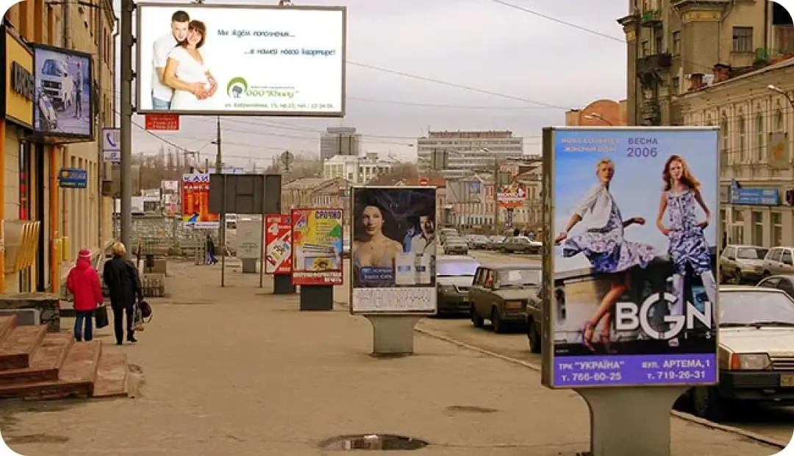

Медиабаинг и баинговые агентства
+7 (495) 623-55-55
Покупка рекламных площадей, рекламного времени на телевидении, радио, места в печатных изданиях называется медиабаингом. Это название происходит от английского выражения media buying и предполагает покупку или предоставление во временное пользование пространства для размещения рекламы (Закупка рекламы). Медиабаинг может выражаться в продаже рекламных поверхностей других операторов наружной или внутренней рекламы. Клиентами медиабаинговых агентств являются как сами рекламодатели, так и другие рекламные агентства. Нередки случаи объединения агентств в медиабаинговые компании, которые стремятся получить право на льготных условиях размещать рекламу в каком-то популярном месте или на выгодном носителе.
Например, рекламное агентство Мособлреклама владеет огромным количеством рекламных площадей в московской области. В распоряжении этого агентства более 1000 рекламных конструкций в Подмосковье. Помимо этого, «Мособлреклама» является медиагбаинговым рекламным агентством полного цикла, оказывает все виды услуг в сфере рекламы: в СМИ, на транспорте, на телевидении, радио, метро, изготовлении полиграфической продукции, создании и установке наружной и внутренней рекламы.
Например, клиенту требуется разместить рекламу на щите в определенном месте Москвы. Менеджер обращается с данным предложением к своим партнерам в другие рекламные агентства, предлагая клиенту формирование проработанного коммерческого предложения. Существует специальная программа, помогающая за короткий период подобрать лучшие варианты, наиболее выгодную цену, свободные на текущий момент площади.
Таким образом, запрос клиента оказывается удовлетворенным, так как он:
- получает желаемое по той же цене, как если бы он сам обратился в другое агентство;
- становятся доступны даже те рекламные площади, которые принадлежат другим агентствам;
- не приходится самостоятельно искать выгодные предложения, обращаясь в каждое агентство и сравнивая десятки параметров размещения и цен.
Выгодно такое сотрудничество и тому агентству-партнеру, которое предоставляет рекламную площадь:
- ему не приходится самостоятельно искать клиента;
- все хлопоты по оформлению договора и подготовке нужной документации берет на себя медиабаинговое агентство;
- рекламные конструкции используются без простоев.
Медиабаинговое агентство также получает свои выгоды:
- Не теряются постоянные или впервые обратившиеся клиенты;
- Расширяется база рекламных площадок;
- Выплачивается агентское вознаграждение от 10 до 30% за приведение клиента.
Закупка медийного времени
Если речь идет о размещении рекламы на телевидении или радио, то здесь наиболее важную роль играет выбор наиболее удачного времени трансляции или популярной передачи, в которой реклама станет более эффективной.
Расчет может производиться по двум схемам:
- Оплачивается поминутный тариф;
- Плата рассчитывается в зависимости от рейтинга.
Наиболее выгодным временем выхода радио рекламы или прайм-таймом считаются утренние часы в период, когда люди едут на работу и слушают новости. На телевидении прайм-таймом является время показа популярных фильмов, футбольных матчей, культовых передач, которые просматривают потенциальные клиенты.
Рекламные места покупаются и в прессе. Так, к примеру, очень популярной считаются объявления в периодических изданиях, на первых и последних полосах журналов, газет. Многие баинговые агентства выкупают целые полосы или разделы для публикации рекламы, с целью последующей перепродажи части рекламного места разным рекламодателям. Чем выше рейтинг издания, тем дороже будет цена на рекламу. На стоимость влияют также тираж издания, его популярность, качество бумаги, оформление, наличие картинок, цветность журнала или газеты и пр.
Баинг интернет площадей
Одним из видов распространения рекламы является интернет. Медиабаинговые агентства также стремятся выкупить наиболее выгодные площади, места на главных страницах популярных сайтов. Эффективность размещаемой здесь рекламы будет зависеть от тематики сайта (она должна соответствовать направлению деятельности рекламодателя), от рейтинга данного ресурса, от количества ежедневных посетителей и уникальных пользователей. Здесь очень важно выбрать место для демонстрации рекламного баннера или ссылки, которая приведет потенциальных клиентов в место продаж. Очень важно и количество показов сообщений или роликов.
Некоторые организации специально создают сайты, на которых помещают нужный, полезный, интересный большинству пользователей контент, с целью в дальнейшем размещать здесь рекламу от других компаний. Продажа рекламных мест становится очень востребованной, если сайт часто посещаем, если его страницами пользуются активные, платежеспособные граждане. Например, на сайте можно помещать прогноз погоды, валютные курсы, рейтинги спортивных состязаний, информацию о валютных торгах. Также можно публиковать последние известия, онлайн просмотр свежих фильмов или видео роликов, музыку и пр. Чем больше посетителей приходит на портал, тем более дорогими становятся места для рекламы.
Покупка площадей в наружной рекламе
Стоимость размещения в наружной рекламе будет зависеть от места расположения конструкции, от материала, из которого она изготовлена, от стороны на которую будет помещена реклама. Например, сторона А щитов развернута по направлению к движущемуся потоку автомобилей, сторона В повернута в противоположном движению направлении, поэтому площади стороны А дороже.
- Также важен размер конструкции: чем она больше, тем заметнее, а значит и дороже место под рекламу;
- Если конструкция снабжена подсветкой, электрическими деталями, то возрастает и стоимость;
- Наличие расположенных поблизости часто посещаемых объектов увеличивает цену. Например, это могут быть торговые, развлекательные центры, крупные транспортные узлы, аэропорты, железнодорожные вокзалы и пр.
Преимущества баинговых агентств
- Возможность четко планировать распределение рекламных площадей;
- Наличие большого количество объектов наружной, внутренней рекламы, свободных интернет площадок, мест в прессе, времени в эфире ТВ и радио за счет объединения рекламных агентств в группы;
- Способность удовлетворить запросы практически каждого обратившегося за услугой размещения рекламы клиента;
- Предоставление своим клиентам скидок на размещение. Дело в том, что медиабаинговые компании, закупающие большое количество рекламных площадей по оптовым ценам имеют возможность предоставлять клиентам скидки. Часто покупать площади у медиабаинговых агентств на порядок дешевле, чем у самих владельцев площадками;
- Более полное заполнение рекламных конструкций, уменьшение простоя за счет того, что другие агентства также поставляют желающих клиентов;
- Удобство для начинающих рекламных агентств, которые еще не имеют достаточно своих собственных рекламных площадок;
- Клиентам не нужно самостоятельно искать наиболее выгодные площадки для размещения, сравнивать цены, оформлять документацию. Все это за них сделают в медиабаинговом агентстве.
Преимущества баинговых агентств
Основными минусами являются:
- Опасность не распродать рекламные площади или время рекламного эфира в полном объеме. В этом случае теряются прибыли, а иногда даже грозят штрафы за то, что оплата поступает не вовремя;
- Часто скидки на размещение рекламы даются не только медиабаинговым агентствам, а и достаточно надежным клиентам-рекламодателям. Тогда теряется смысл в посреднической деятельности.